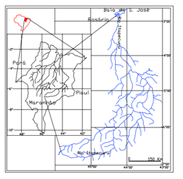

Governança das águas superficiais no maranhão: análise da qualidade na bacia do rio Itapecuru, Maranhão e a urgência de ações para evitar a crise hídrica
Governance of surface waters in maranhão: an analysis of water quality in the itapecuru river basin, Maranhão and the urgent need for actions to prevent a water crisis
Paulo Henrique Pereira ROCHA1; Natilene Mesquita BRITO2; Andréa Araújo do CARMO3
1 Universidade Estadual do Maranhão, Mestrado Profissional ProfÁgua – prof_paulo_rocha@hotmail.com
2 Instituto Federal do Maranhão, Mestrado Profissional - ProfÁgua – natilene.brito@ifma.edu.br
3 Universidade Estadual do Maranhão, Superitendente de gestão ambiental; Mestrado Profissional - ProfÁgua – andreaaraujo@professor.uema.br
RESUMO
A Bacia Hidrográfica do Rio Itapecuru é fundamental para o Estado do Maranhão, não apenas pelo abastecimento de água para diversos municípios, mas também por sustentar atividades agrícolas, industriais e domésticas. Porém, a crescente pressão sobre os recursos hídricos, exacerbada por fatores como uso descontrolado, captações irregulares, desmatamento, poluição e mudanças climáticas têm causado comprometimento da qualidade das águas superficiais da Bacia. Admitindo este cenário, o artigo explora a governança das águas na bacia do Itapecuru, utilizando dados de qualidade da água coletados em um mesmo ponto georreferenciado na bacia hidrográfica do rio Itapecuru que serve como ponto de referência para a rede estadual de monitoramento de qualidade das águas quanto a rede nacional de qualidade das águas, utilizando como procedimento operacional padrão as técnicas descritas no Guia nacional de coleta e preservação de amostras da CETESB e analisados em um espaço temporal de quatro anos 2021, 2022, 2023 e 2024 para destacar a necessidade de ações urgentes que possam evitar uma crise hídrica.
Palavras-chave: bacia do rio itapecuru, governança hídrica; crise hídrica
ABSTRACT
The Itapecuru River Basin is essential to the State of Maranhão, not only for supplying water to various municipalities but also for supporting agricultural, industrial, and domestic activities. However, the increasing pressure on water resources, exacerbated by factors such as uncontrolled use, irregular withdrawals, deforestation, pollution, and climate change, has compromised the quality of the basin's surface waters. Acknowledging this scenario, the article explores water governance in the Itapecuru Basin, using water quality data collected from a single georeferenced point in the basin, which serves as a reference point for both the state and national water quality monitoring networks. The standard operating procedures described in CETESB's National Guide for Sample Collection and Preservation were used, and the data were analyzed over a four-year period (2021, 2022, 2023, and 2024) to highlight the urgent need for actions to prevent a potential water crisis.
Keywords: Itapecuru River Basin, water governance, water crisis.
Introdução
A água é considerada um bem de domínio público, recurso natural limitado, dotado de valor econômico de usos múltiplos, recurso essencial para a sustentação da vida em nosso planeta, garantindo a saúde dos ecossistemas, produção energética e agrícola, necessários para o equilíbrio climático e o bem-estar físico. A governança das águas superficiais no Estado do Maranhão apresenta-se como um desafio crescente, mas necessário, principalmente diante das mudanças climáticas e do aumento da demanda por recursos hídricos.
A avaliação da qualidade da água envolve a análise de uma série de parâmetros físicos, químicos e biológicos que revelam suas características e condições. Esses parâmetros podem indicar tanto processos naturais como a influência de atividades humanas. No Brasil, a legislação ambiental, especificamente a Resolução CONAMA nº 357/2005 e a Política Nacional de Recursos Hídricos (PNRH) (BRASIL, 1997, 2005), define os padrões de qualidade da água e os usos adequados para cada corpo hídrico, garantindo assim a proteção e gestão sustentável dos recursos hídricos. A intensificação da degradação dos rios urbanos no Brasil torna fundamental o monitoramento contínuo dos parâmetros que influenciam a qualidade da água (CARVALHO, MARANGON & SANTOS, 2020). A região Nordeste, em particular, enfrenta uma lacuna significativa no conhecimento sobre as vazões dos cursos d'água e a qualidade das águas superficiais nas bacias hidrográficas. Essa situação é ainda mais evidente no Maranhão, onde, apesar da presença de grandes bacias hidrográficas com elevados volumes de água, o monitoramento dos recursos hídricos não é realizado de forma adequada (MEDEIROS, SILVA & LINS, 2018).
O Brasil possui uma das maiores reservas de água doce do mundo. Com índices pluviométricos de 1.000 mm a 3.000 mm de chuva por ano sobre boa parte de seu território, o país possui uma descarga média de longo período nos rios de aproximadamente 182.000 m3 /s (REBOUÇAS, 2003). Da água doce disponível no país, 70% localiza-se na região Norte, 15% na região Centro-Oeste, 6% no Sudeste, 6% no Sul e 3% no Nordeste (TUNDISI, 2014).
Apesar da grande disponibilidade hídrica no país, é notável a dificuldade em atender à demanda por água, seja para uso doméstico, industrial ou mesmo agrícola em determinadas épocas do ano, uma vez que a distribuição das reservas hídricas em nosso país não é homogênea.
O Estado do Maranhão possui diversas bacias hidrográficas consideradas genuinamente maranhenses desempenhando papel vital no desenvolvimento socioeconômico da região. Cita-se as bacias hidrográficas dos rios Mearim, Munim, Preguiças, Pericumã, Turiaçu e Itapecuru. A bacia hidrográfica do rio Itapecuru é crucial para o abastecimento de água de diversas cidades, incluindo a capital São Luís. Percorrendo uma extensão de aproximadamente 1.050 Km, até sua desembocadura na baía do Arraial, a sul da ilha de São Luís e abastecendo aproximadamente 1.401.698 habitantes e uma densidade populacional de 26,5 hab/Km2 distribuídos em 45 municípios sendo 10 destes localizadas às margens do rio e está situada na parte centro-leste do Estado do Maranhão, entre as coordenadas 2°51’ a 6°56’ Lat. S e 43°02’ a 43°58’ Long W (Figura 1).
Figura 1 - Localização da Bacia hidrográfica do Itapecuru, Maranhão.

A análise e monitoramento da qualidade das águas superficiais da Bacia Hidrográfica do Rio Itapecuru tem se mostrado uma ferramenta necessária e contínua, exigindo uma governança eficaz para evitar uma crise hídrica. Este estudo analisou dados de qualidade da água coletados em um ponto do Rio Itapecuru por quatro anos.
A escolha da BHR/Itapecuru deve-se por ela ser uma das mais importantes do estado do Maranhão, desempenhando um papel crucial no abastecimento de água para diversas cidades, incluindo a capital, São Luís. Tendo como foco parâmetros como pH, turbidez, oxigênio dissolvido, condutividade elétrica, salinidade, alcalinidade, transparência, sólidos dissolvidos, sólidos suspensos, cloreto total, fluoreto total, brometo total, nitrato, sulfato, fosfato e Nitrito obtidos por meio do programa Qualiágua executado pelo Laboratório de Análises Ambientais da Secretaria de Estado de Meio Ambiente e Recursos Naturais.
Materiais e Métodos
Os dados de qualidade da água foram coletados em um ponto específico do Rio Itapecuru, localizado na cidade de Rosário, Maranhão, em um intervalo de quatro anos.
A pesquisa foi conduzida em três etapas principais:
1. Coleta de Amostras: As amostras de água foram coletadas em um mesmo ponto (-3,05814, -44,25304) localizado na Bacia Hidrográfica do Rio Itapecuru em diferentes épocas do ano (novembro, setembro, fevereiro, julho e maio) e em diferentes anos (2021, 2022, 2023 e 2024), correspondendo aos períodos chuvoso e seco da região.
2. Análise Laboratorial: As amostras foram coletadas em frascos produzidos em poliestireno, estéril de acordo com a Norma ISO 11137-02, com tampa de rosca protegida por lacre de vedação que garante esterilidade, destinado a amostragem de águas com capacidade total de até 120 mL e com linha de marcação em 100 mL, profundidade de 0,3 metros abaixo da lâmina d'água, resfriadas a 4ºC com variação de 2ºC e transportadas ao Laboratório de Análises ambientais da Secretaria de Estado de Meio Ambiente e Recursos Naturais-SEMA/MA, seguindo as normas e padrões nacionais e internacionais para a avaliação da qualidade da água. Foram considerados parâmetros físico-químicos como pH, turbidez, oxigênio dissolvido (OD) (mg.L-1), condutividade elétrica (CE) (uS/cm2), salinidade, alcalinidade, transparência, sólidos dissolvidos (SD) (mg.L-1), sólidos suspensos, cloreto total (mg.L-1), fluoreto total (mg.L-1), brometo total (mg.L-1), nitrato (mg.L-1), sulfato (mg.L-1), fosfato (mg.L-1) e Nitrito (mg.L-1).
3. Análise de resultados: Com os resultados obtidos, foram elaborados laudos, tabelas, a fim de estabelecer curvas gráficas para análise de cada parâmetro de forma individualizada e depois de forma associada para que ao término, fossem estabelecidas relações e projeções futuras da qualidade da água.
A Bacia hidrográfica do rio Itapecuru é uma das mais importantes para o Estado do Maranhão, devido sua grande extensão de aproximadamente 1.050 Km, torna-se difícil estabelecer pontos de monitoramento de qualidade da água em sua totalidade fazendo-se assim necessário estabelecer pontos de coletas em áreas específicas e que apresentem relevância social, econômica e ambiental. O ponto de coleta escolhido para este trabalho é um dos 254 pontos determinados pelo Convênio ANA/SEMA em NOTA TÉCNICA Nº 84/2022/SGH que estabelece os pontos de coleta para compor a RNQA-Rede Nacional de Qualidade da Água. Localizado na cidade de Rosário/MA, com coordenadas Geográficas de latitude -3,05433 S e longitude -44,25168 W e código RNQA MA-7181-I-4 e distando 23,6 Km da baía do Arraial. (Tabela nº01).
Tabela 1 - Localização geográfica com coordenadas do ponto de coleta.
| Nome Município | Nome do Corpo D’Água | Data da Coleta (dd/mm/aaaa) | Hora (hh:mm) | Posição horizontal da coleta (latitude) | Posição vertical da coleta (longitude) |
|---|---|---|---|---|---|
| Rosário | Rio Itapecuru | 25/11/2021 | 14:25 | -3,05814 | -44,25304 |
| Rosário | Rio Itapecuru | 28/09/2022 | 14:58 | -3,05433 | -44,25168 |
| Rosário | Rio Itapecuru | 13/02/2023 | 13:52 | -3,05489 | -44,25091 |
| Rosário | Rio Itapecuru | 17/07/2023 | 14:00 | -3,05489 | -44,25091 |
| Rosário | Rio Itapecuru | 07/05/2024 | 15:32 | -3,05814 | -44,25304 |
Fonte: Laboratório de Análises Ambientais/SEMA 2024.
Resultados e Discussão
Os resultados indicam uma variação significativa na qualidade da água, associada a fatores como condições climáticas e uso do solo, ressaltando a necessidade urgente de estratégias de gestão integradas e sustentáveis para a gestão das águas no Estado do Maranhão.
Após as análises realizadas no Laboratório de Análises Ambientais, os dados foram dispostos em tabela. (Tabela nº02).
Tabela 2 - Tabela de parâmetros e resultados analisados no período de 2021, 2022, 2023 e 2024 dentro do Programa Qualiágua executado pelo Laboratório de Análises Ambientais da SEMA/MA em parceria com Agência Nacional de Águas e Saneamento Básico/ANA.
| RNQA | MA-7181-I-4 | MA-7181-I-4 | MA-7181-I-4 | MA-7181-I-4 | MA-7181-I-4 | VMP CONAMA 357/2005 |
|---|---|---|---|---|---|---|
| MUNICÍPIO | Rosário | Rosário | Rosário | Rosário | Rosário | - |
| CORPO HÍDRICO | Rio Itapecuru | Rio Itapecuru | Rio Itapecuru | Rio Itapecuru | Rio Itapecuru | - |
| DATA | 25/11/2021 | 28/09/2022 | 13/02/2023 | 17/07/2023 | 07/05/2024 | - |
| HORA | 14:25 | 14:58 | 13:52 | 14:00 | 15:32 | - |
| COORDENADAS | -3,05814S | -3,05433S | -3,05489S | -3,05489S | -3,05814S | - |
| -44,25304W | -44,25168W | -44,25091W | -44,25091W | -44,25304W | - | |
| Choveu nas últimas 24 horas (Sim - Não) | Não | Não | Não | Não | Não | - |
| Profundidade (m) | 0,35 | 0,73 | 0,63 | 0,54 | 0,42 | N.R. |
| Temperatura do ar (°C) | 27,00 | 27,50 | 26,57 | 27,20 | 27,05 | N.R. |
| Temperatura da água (°C) | 30,05 | 30,50 | 27,89 | 30,08 | 31,15 | Máximo de 3°C acima da natural |
| pH | 7,36 | 7,29 | 7,24 | 7,02 | 7,30 | 6,0 a 9,0 |
| Oxigênio dissolvido (mg/L 02) | 6,87 | 6,54 | 8,57 | 7,33 | 6,84 | ≥5,0 mg/L |
| Condutividade Elétrica Específica (25°C) (µS/cm a 25°C) | 74,00 | 70,60 | 71,00 | 103,70 | 74,00 | N.R. |
| Turbidez (NTU) | 47,50 | 14,99 | 197,80 | 14,90 | 47,30 | ≤ 100 NTU |
| Salinidade (‰) | 0,03 | 0,03 | 0,01 | 0,05 | 0,03 | N.R. |
| Alcalinidade (mg/L) | 16,00 | 44,00 | 24,00 | 38,00 | 16,20 | N.R. |
| Transparência da água (m) | 0,50 | 0,50 | N.A | 0,45 | 0,5 | N.R. |
| Sólidos Total Dissolvidos (mg/L) | 40,00 | 6,54 | 440,00 | 30280,00 | 40 | ≤500 mg/L |
| Sólidos em suspensão (mg/L) | 30,00 | 27,10 | 29,00 | 46,67 | 30,60 | N.R. |
| Cloreto Total (mg/L de Cl) | 343,42 | 54,13 | NA | NA | 323,42 | ≤250 mg/L |
| Fluoreto Total (mg/L de F) | 0,00 | <0,1 | NA | NA | <0,1 | ≤1,5 mg/L |
| Brometo Total (mg/L de Br) | 1,52 | <0,1 | NA | NA | 1,34 | N.R. |
| Nitrato (mg/L de N) | 4,74 | <0,1 | NA | NA | 4,63 | ≤ 10 mg/L |
| Sulfato (mg/L de S) | 0,08 | 9,52 | NA | NA | 0,07 | ≤250 mg/L |
| Fosfato (mg/L de P) | 0,09 | <0,1 | NA | NA | 0,09 | N.R. |
| Nitrito (mg/L de N) | 0,10 | <0,1 | NA | NA | 0,12 | ≤ 1 mg/L |
NOTA: NR=NÃO REGULAMENTADO
Fonte: Laboratório de Análises Ambientais/SEMA 2024.
Os resultados indicam variações sazonais e anuais na qualidade da água do Rio Itapecuru. Observou-se uma tendência de aumento na condutividade elétrica e nos sólidos dissolvidos, especialmente em períodos de seca, o que pode indicar uma maior concentração de íons dissolvidos devido à redução no volume de água. O pH manteve-se relativamente estável, variando entre 6,24 e 7,36, enquanto o oxigênio dissolvido apresentou flutuações significativas, refletindo a influência de fatores como temperatura da água e presença de matéria orgânica.
Ao se estabelecer um cruzamento dos resultados obtidos em laboratório com os valores máximos permitidos, VMP, apresentados em diretrizes da Resolução CONAMA 357/2005, que estabelece os padrões de qualidade para corpos hídricos, podemos realizar a seguinte análise para o Rio Itapecuru, considerando as amostras coletadas entre 2021 e 2024
O pH de todas as amostras estão dentro do intervalo permitido (6,0 a 9,0), indicando que a água possui um nível adequado de acidez/alcalinidade, em relação ao parâmetro Oxigênio dissolvido, as concentrações estão acima do limite mínimo (≥ 5,0 mg/L), o que é positivo para a manutenção da vida aquática. Os parâmetros Fluoreto, Nitrato, Sulfato e Nitrito, atendem os limites estabelecidos, indicando níveis adequados de compostos relacionados à presença de nutrientes e outros íons na água.
Destaca-se que a turbidez da amostra coletada em 13/02/2023 apresentou um resultado de 197,80 NTU, ultrapassando o limite de 100 NTU, o que pode indicar a presença excessiva de partículas em suspensão, reduzindo a qualidade visual e potencialmente afetando a vida aquática bem como os resultados de Sólidos Totais Dissolvidos que em 17/07/2023 apresentou um valor muito elevado de sólidos dissolvidos (30.280,00 mg/L), o que também está acima do limite permitido (≤ 500 mg/L), sugerindo contaminação por substâncias dissolvidas.
Os resultados obtidos para o Cloreto Total em duas ocasiões (25/11/2021 e 07/05/2024), excederam o valor máximo permitido (≤ 250 mg/L), com valores de 343,42 mg/L e 323,42 mg/L, o que pode indicar intrusão salina ou outras fontes de contaminação. Em uma análise simples, nota-se que a qualidade da água do rio Itapecuru apresentou algumas irregularidades em determinados períodos, especialmente em relação à turbidez, sólidos dissolvidos e cloretos. Esses parâmetros fora dos padrões estabelecidos pela Resolução CONAMA 357/2005 indicam que possíveis impactos ambientais possam estar ocorrendo e que estes podem derivar de atividades humanas ou fenômenos naturais, não precisando exatamente a fonte.
É recomendada a continuidade do monitoramento e a adoção de medidas de gestão para controlar as fontes de poluição, especialmente em relação ao controle de partículas em suspensão e de contaminantes dissolvidos na água.Esses resultados destacam a necessidade de práticas de manejo do solo que reduzam a erosão e o transporte de sedimentos para o Rio Itapecuru. A variabilidade dos parâmetros analisados ao longo dos anos evidencia a complexidade da governança dos recursos hídricos na bacia. A ausência de um sistema de gestão integrado e a falta de monitoramento contínuo comprometem a capacidade de resposta a eventuais crises, como a que pode ser desencadeada por uma seca severa ou pela poluição exacerbada.
Conclusão
Os dados apresentados neste estudo sublinham a urgência de uma governança eficaz das águas superficiais na Bacia do Rio Itapecuru. Há evidências de deterioração na qualidade da água ao longo do tempo, especialmente com o aumento da turbidez, sólidos dissolvidos e alterações nos níveis de condutividade elétrica. O aumento na turbidez e sólidos dissolvidos em fevereiro de 2023 sugere a introdução de contaminantes ou sedimentos, possivelmente devido a mudanças climáticas ou atividades humanas. As variações no pH, oxigênio dissolvido e alcalinidade também indicam flutuações na saúde do corpo hídrico, com possíveis períodos de recuperação e deterioração. A análise dos parâmetros sugere uma necessidade de monitoramento contínuo e medidas de mitigação para preservar a qualidade da água.
A deterioração da qualidade da água, impulsionada por fatores antropogênicos e naturais, exige a implementação imediata de políticas públicas que priorizem a sustentabilidade e a proteção dos recursos hídricos. Recomenda-se a criação de um plano de gestão integrado que inclua monitoramento contínuo, práticas de conservação do solo, controle de poluentes e engajamento das comunidades locais na preservação do rio. Sem essas medidas, o Maranhão pode enfrentar uma crise hídrica com sérias repercussões sociais e econômicas.
Referências
ANA - AGÊNCIA NACIONAL DE ÁGUAS E SANEAMENTO BÁSICO. Relatório de conjuntura dos recursos hídricos no Brasil. Brasília, 2023.
ABNT - ASSOCIAÇÃO BRASILEIRA DE NORMAS TÉCNICAS. NBR 9898: planejamento de amostragem de efluentes líquidos e corpos receptores. Rio de Janeiro, 2015.
BRASIL. Ministério do Meio Ambiente. Resolução CONAMA nº 237, de 19 de dezembro de 1997. Dispõe sobre a revisão e complementação dos procedimentos e critérios utilizados para o licenciamento ambiental.
CARVALHO, J. W. L. T.; MARANGON, F. H. S.; SANTOS, I. Recuperação de rios urbanos: da interdependência e sincronicidade dos processos de desnaturalização em rios e bacias hidrográficas urbanas. Revista do Departamento de Geografia - USP, v. 40, 2020.
CLESCERI, L. S.; GREENBERG, A. E.; EATON, A. D. Standard methods for the examination of water and wastewater. 20th ed. Washington, DC: American Public Health Association; American Water Works Association; Water Environment Federation, p. 1325, 1998.
COMPANHIA AMBIENTAL DO ESTADO DE SÃO PAULO. Guia de coleta e preservação de amostras de água. São Paulo, 1987. 150 p.
COMPANHIA AMBIENTAL DO ESTADO DE SÃO PAULO. Variáveis de qualidade das águas. São Paulo, 2001.
MEDEIROS, W. M. V.; SILVA, C. E. D.; LINS, R. P. M. Avaliação sazonal e espacial da qualidade das águas superficiais da bacia hidrográfica do rio Longá, Piauí, Brasil. Revista Ambiente & Água, v. 13, 2018.
ODUM, E. P.; BARRET, G. W. Fundamentos de ecologia. 5. ed. São Paulo: Thomson Learning, 2007.
PEREIRA, L. C.; SILVA, M. A.; GOMES, F. R. Gestão hídrica e sustentabilidade no Nordeste brasileiro. Revista Brasileira de Recursos Hídricos, v. 28, n. 2, p. 45-63, 2022.
SANTOS, J. R.; OLIVEIRA, A. M. Governança ambiental e os desafios da gestão das águas no Maranhão. Revista de Estudos Ambientais, v. 10, n. 4, p. 23-39, 2021.
REBOUÇAS, A. C. Água no Brasil: abundância, desperdício e escassez. Bahia Análise & Dados, v. 13, n. esp., p. 341-345, 2003. Tradução.
TUCCI, C. E. M.; HESPANHOL, I.; NETTO, O. M. C. Cenários da gestão da água no Brasil: uma contribuição para a “visão mundial da água”. Revista Brasileira de Recursos Hídricos, v. 5, n. 3, p. 31-43, 2000.
TUNDISI, J. G. Recursos hídricos no Brasil: problemas, desafios e estratégias para o futuro. Rio de Janeiro: Academia Brasileira de Ciências, v. 76, 2014.